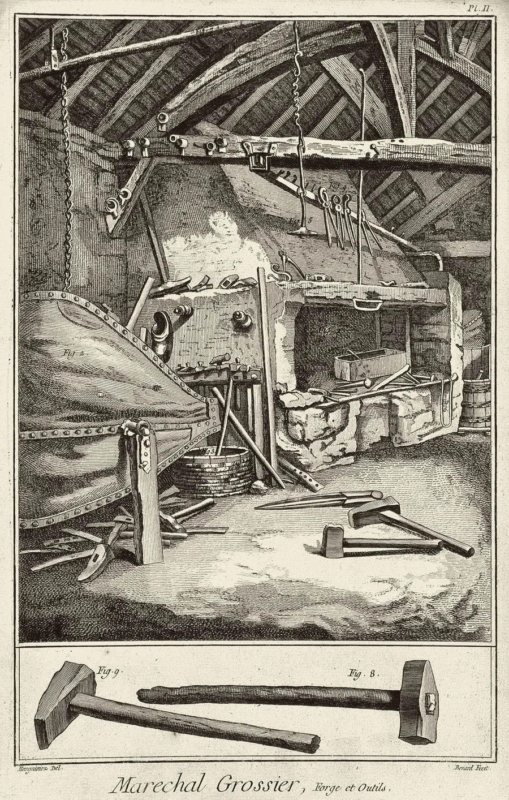

Software EngineerPart-time
Offroad Apps (VitalsIQ) · Delft · Jan 2026 – Present
Turning Garmin wearables into a live vital-sign pipeline feeding a .NET MAUI companion app and an ATAK plugin.
- 7 live vital types
- .NET 10 + MAUI
- JABCode ported C → C#
Hi, I’m Cristian
An engineer just as happy chasing microamps in firmware as training a model or shipping the app on top — and I care a lot about the people it’s for.

Across the stack
One instrument, cut open the way this volume cuts open a machine. Above the line, the parts people use. Below it, everything that makes them work — and what I’ve shipped at each depth.
Above ground · what people use
Companion apps and web front-ends that make the hardware make sense — pairing a wearable, watching vitals arrive, reviewing a document in a fraction of the time.
APIs, background workers, vector search, and the pipelines that keep data moving between the device and the app.
Below ground · what makes them work
Machine learning that runs on the chip instead of the cloud — a noise classifier in 40 KB, keyword spotting, speech data pipelines.
Real-time DSP at the edge — A-weighted dBA and Leq metering from stereo MEMS microphones, calibrated and clipping-aware.
Driver components built clean on an RTOS, and an LTE-M uplink that stays up in the field.
The stubborn end — differential power profiling to hunt idle current, and low-level curiosities like a JIT compiler written in assembly.
Fig. 1. The stack in section — six figures on one shaft, A at the surface, F in the silicon.
Offroad Apps (VitalsIQ) · Delft · Jan 2026 – Present
Turning Garmin wearables into a live vital-sign pipeline feeding a .NET MAUI companion app and an ATAK plugin.

Insyght.io · Delft · Aug 2025 – Present
Firmware for AuraSense, a solar-powered nRF54L15 + nRF9151 noise and air-quality monitor.

Altix Capital · Amsterdam · Apr 2025 – Jun 2025
An AI document-ingestion pipeline that took a lot of the grind out of analyst screening.

Huawei · Amsterdam · Dec 2024 – May 2025
Keyword-spotting and ASR/TTS data and benchmarking pipelines for speech models.
Fig. 2. Four positions held, in the order worked.

A from-scratch QEM mesh solver for Huawei’s IMC Challenge — all seven cases accepted.
C++Huawei IMC87.49 score

Options market-making with Black–Scholes pricing, an IV-smile fit, and a time-series test library.
PythonIMC Prosperity 4NumPy · SciPy

Small real-world annoyances, automated away — change alerts, a gym-slot grabber, an event feed.
3 bots — change-tracking · SSO booking · event aggregation
Pythonaiogram + CeleryPlaywright
A just-in-time compiler written entirely in assembly — emitting native machine code by hand.
x86-64 assemblyself-directedsource → native
Fig. 3. Four built for their own sake.
Beyond the code
I grew up in Moldova — a loud kid in a one-room apartment, me and my older sister, parents who’d come from the village to the capital to study and stayed. Family legend says my maths got good right after I took a knock to the head at a taekwondo competition — a coincidence I’ve been happy to take credit for ever since. I went to a small neighbourhood school where no one expected much of me, and at ten I walked into my first olympiad and came home with first in the district and second in the whole city. At the parents’ evening after, the teacher wouldn’t stop praising me, and my parents beamed.
I’m back on the taekwondo mat these days — a beginner again, years after an injury stopped me the first time. Otherwise: books I finish even when they’ve stopped being good (I never drop one), board game nights with friends, cooking, and always music.
Fig. 4. The parts of the engineer that no plate records.
Say hello
About a role, a hard problem, or just what you’re building. Drop me a line — I read everything.